Erich's Championship Puzzles
Some of my puzzles were used in the U.S., U.K., and World Puzzle Championships.
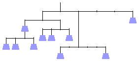
1999 U. S. Puzzle Championship
(3 puzzles)
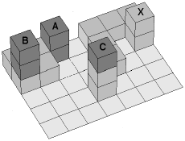
2000 U. S. Puzzle Championship
(13 puzzles)
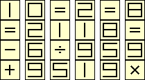
2000 World Puzzle Championship
(18 puzzles)
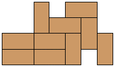
2001 U. S. Puzzle Championship
(3 puzzles)
2002 U. S. Championship
(5 puzzles)
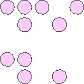
2003 U. S. Puzzle Championship
(3 puzzles)
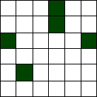
2004 U. S. Championship
(4 puzzles)
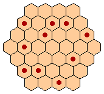
2005 U. S. Puzzle Championship
(4 puzzles)
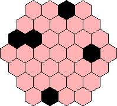
2006 U. S. Championship
(5 puzzles)
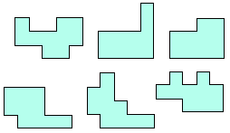
2007 U. S. Puzzle Championship
(1 puzzle)
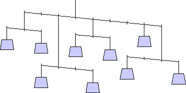
2008 U. S. Championship
(2 puzzles)
2009 U. S. Championship
(3 puzzles)
2010 U. S. Championship
(2 puzzles)
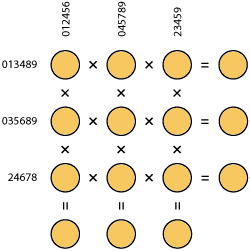
2011 U. S. Championship
(1 puzzle)
2012 U. S. Championship
(2 puzzles)
2012 U. K. Championship
(2 puzzles)
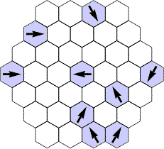
2014 World Championship
(8 puzzles)
2015 U. K. Championship
(2 puzzles)